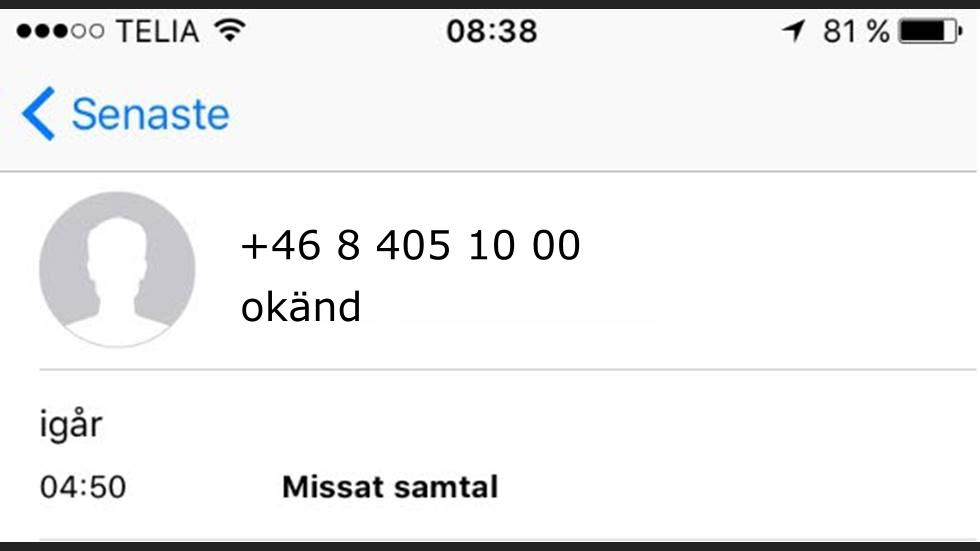
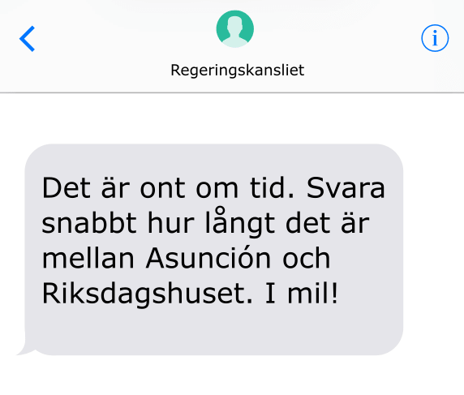

When you return from your morning "fika" you notice a missed phone call.

Who is the call from?
Plötsligt plingar det till i telefonen.

Bäst att göra som de säger...
Bra! Tyvärr måste jag be dig om en sak till.
Kan du få fram koden för 3283 ur kodgeneratorn?
Du klarade allt.
Bra jobbat!